Как перейти из Claude в Codex, даже если доступ закрыли
Начальный уровень
Если Claude просит паспорт или уже закрыл доступ, главное - сохранить переписку, файлы проекта и решения, без которых трудно продолжить работу. Ниже объясняю шаг за шагом, как подготовить копию заранее, что сохранить после запроса документа и как открыть папку проекта в Codex и продолжить работу.
Содержание
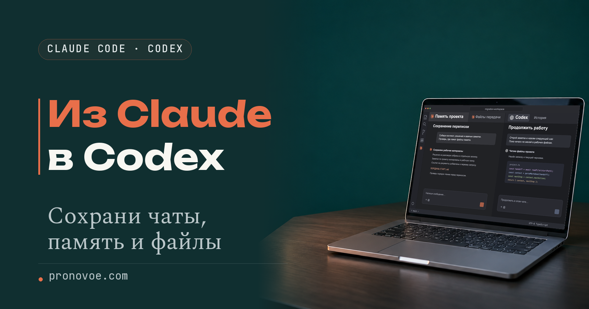
Что открыть в Codex
Схема рабочей папки после переноса.
- Рабочая папка
- Файлы проекта и сохранённые разговоры в TXT, обычных текстовых файлах.
- Папка
ПЕРЕДАЧА, если Claude успел её подготовить.СТАРТ.md- записка, с чего продолжить.- Копии заметок из памяти Claude.
ПРОМПТ-ДЛЯ-CODEX.txt- первое сообщение для Codex.
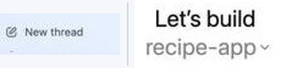
1. Доступ есть и Claude ещё не просил документ
Открой рабочую папку в Finder на Mac или в Проводнике на Windows. Скачай в неё важные документы и вложения из чатов. Если вся работа была в браузере, создай новую папку и сложи туда скачанные файлы и сохранённые ответы.
Выгрузи переписку из Claude
Войди в Claude с компьютера и открой раздел Privacy («Конфиденциальность») по прямой ссылке. Это раздел настроек Claude, где можно запросить архив переписки.
Посмотри на правую часть страницы. В блоке Your data («Твои данные») есть кнопка Export data («Экспортировать данные»). Нажми её, чтобы Claude начал готовить ZIP-архив с перепиской.
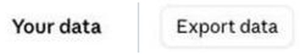
Пока Claude готовит архив, можно собрать материалы для передачи. Ссылка на скачивание придёт на почту, привязанную к аккаунту. Открой её, пока она действует, в браузере с открытым аккаунтом Claude, и сохрани ZIP на компьютере.
Ссылка действует 24 часа с момента создания. Архив не включает исходные вложения, скачай их отдельно.
Запустить экспорт в приложениях Claude для iPhone и Android нельзя. Если на рабочих тарифах Team или Enterprise кнопки нет, обратись к владельцу организации: он может включить экспорт для участников. Для основного владельца есть отдельный порядок выгрузки всей организации. Справка Claude об экспорте на рабочих тарифах.
Попроси Claude собрать память, правила и первый запрос для Codex
Claude Code - версия Claude для работы с файлами проекта. Если проект ведётся в Git, системе истории правок, запрос также попросит Claude перечислить изменения, которые ещё не попали в облачную копию. Открой разговор Claude Code, в котором уже шла работа. Если нужный разговор был в расширении VS Code, историю сеансов поможет найти инструкция Claude Code для этого редактора. Справа вверху блока нажми «Скопировать промпт» и вставь его в поле сообщения. Запрос просит Claude собрать правила, решения, незавершённые задачи и ссылки на исходники. В этот запрос уже включён поиск автоматической памяти проекта, то есть заметок, которые Claude сохраняет между чатами. Она может лежать в ~/.claude/projects/…/memory/ или в другой папке, заданной в настройках, и при открытии проекта в Codex эти заметки могут остаться снаружи. Где Claude Code хранит память.
Если работаешь на сайте Claude, отправь тот же промпт в нужном разговоре. В папке проекта создай подпапку ПЕРЕДАЧА. Сохрани в ней записку СТАРТ.md и первый запрос для Codex под именем ПРОМПТ-ДЛЯ-CODEX.txt. Расширение .md в имени записки обозначает текстовый файл Markdown.
Mac
- В TextEdit вставь записку и нажми Command + Shift + T, чтобы переключить новый форматированный документ в обычный текст. Справка Apple о формате текста.
- Нажми Command + S. В поле «Сохранить как» введи
СТАРТ.md, укажи папкуПЕРЕДАЧАи нажми «Сохранить». Если TextEdit предлагает другое расширение, оставь.md.
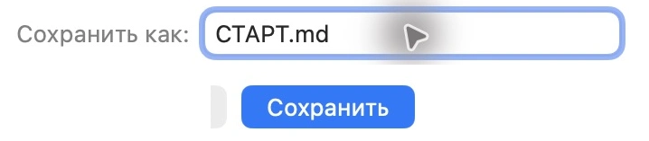
Windows
- Вставь записку в Блокнот и нажми Ctrl + Shift + S, чтобы открыть окно сохранения.
- В поле «Имя файла» введи
СТАРТ.md. В поле «Тип файла» выбери «Все файлы», чтобы Блокнот не дописал.txt. Если доступен выбор кодировки, оставь UTF-8. Сохрани в папкуПЕРЕДАЧА.
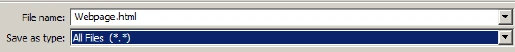
Убедись, что в папке ПЕРЕДАЧА записка называется ровно СТАРТ.md. Лишнее .txt может быть скрыто.
Mac
- Выдели записку в Finder и нажми Command + I, чтобы открыть свойства файла.
- Раскрой раздел «Имя и расширение». Полное имя должно быть
СТАРТ.md. Справка Apple о расширениях.
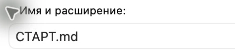
Windows
- В Проводнике Windows 11 открой «Вид», затем «Показать» и включи «Расширения имён файлов». Если у тебя лента Windows 10, эта галочка находится на вкладке «Вид». Справка Microsoft о расширениях.
- В папке
ПЕРЕДАЧАпроверь, что полное имя файлаСТАРТ.md.
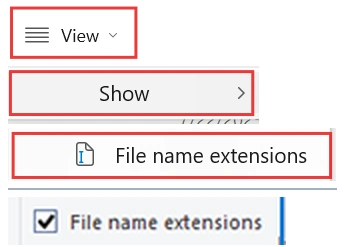
Если имя получилось СТАРТ.md.txt, сохрани записку ещё раз под точным именем СТАРТ.md. Сохрани первый запрос с расширением .txt. Решения из других важных чатов добавляй в отдельные текстовые файлы и вписывай их имена в СТАРТ.md.
Репозиторий - папка проекта с историей Git. Ветка - отдельная линия изменений. Коммит - запись о сохранённых правках.
Пример до. В папке есть черновик письма клиенту, а согласованные условия оплаты записаны в памяти Claude за пределами проекта.
Подготовь этот проект к продолжению в Codex. Используй файлы текущего проекта, этот разговор и сохранённые материалы, которые относятся к проекту.
1. Определи точный путь к корню проекта, то есть к его основной папке. Собери действующие инструкции, принятые решения, мои требования к работе, состояние задач и незавершённые правки. Для каждой задачи укажи исходники и конкретное следующее действие. Отдели подтверждённое от того, что предстоит уточнить.
2. Найди фактическую папку автоматической памяти этого проекта. По умолчанию она может лежать в ~/.claude/projects/<проект>/memory/ за пределами рабочей папки. Учти изменённую папку конфигурации и настройку autoMemoryDirectory, если они используются. Прочитай MEMORY.md и связанные файлы, включая нужные заметки, на которые ссылаются инструкции проекта. Если какой-то путь недоступен, назови его и скажи, что мне сохранить вручную. Чужие проекты не открывай.
3. Создай папку ПЕРЕДАЧА в корне проекта. Сохрани в ней копии относящихся к проекту заметок и внешних инструкций. Добавь ПЕРЕДАЧА/СТАРТ.md с порядком чтения, ссылками на копии и исходники, списком открытых задач и первым действием. В списках записывай пути относительно корня проекта. Для кликабельных Markdown-ссылок используй пути относительно папки того файла, в котором стоит ссылка. Убедись, что ссылки из СТАРТ.md, скопированного MEMORY.md и внешних инструкций ведут на файлы внутри проекта. Обнови пути только в копиях. Запиши, какие навыки, агенты и подключения нужны и что придётся настроить заново. Не копируй пароли, ключи, файлы .env с переменными окружения, данные входа и постороннюю память.
4. Если проект ведётся в Git, укажи текущую ветку и связанную с ней ветку на GitHub или другом Git-хостинге. Перечисли незакоммиченные правки, новые файлы, локальные коммиты, которых ещё нет в ветке на хостинге, и отложенные изменения в stash, то есть во временном хранилище Git, если они относятся к проекту. Отдельно перечисли нужные файлы, которые Git игнорирует. Покажи точные названия обеих веток и идентификатор последнего локального коммита. Отметь файлы с секретами или личными данными, которые нельзя включать в коммит, без вывода их содержимого. Скажи, что положить в локальный архив, что можно включить в коммит и что нужно отправить на Git-хостинг. Не меняй историю Git и не делай коммит и не отправляй файлы на GitHub без моей команды.
5. Напиши готовое первое сообщение для Codex в файле ПЕРЕДАЧА/ПРОМПТ-ДЛЯ-CODEX.txt и выведи его в чат. Укажи, какую папку мне открыть в Codex. Попроси Codex прочитать СТАРТ.md, указанные в нём файлы памяти и инструкций, а также нужные исходники. В ответе Codex должен назвать прочитанные файлы, последнее принятое решение, первый шаг и всё, к чему у него нет доступа. До моей команды рабочие файлы не менять.
В конце перечисли созданные файлы и всё, что осталось сохранить вручную. Если ты работаешь в веб-чате без доступа к диску, выведи записку и готовый запрос для Codex двумя отдельными блоками. Я сохраню их как ПЕРЕДАЧА/СТАРТ.md и ПЕРЕДАЧА/ПРОМПТ-ДЛЯ-CODEX.txt. Если разговор ссылается на файл, к которому у тебя нет доступа, укажи это в записке.Пример после. В папке ПЕРЕДАЧА лежат записка СТАРТ.md, копия нужной заметки и ПРОМПТ-ДЛЯ-CODEX.txt. В записке указано, какой абзац дописать и из какого файла брать условия оплаты.
Сохрани копию проекта на компьютере и, если есть репозиторий, на GitHub
Сделай ZIP-копию проекта и сохрани её отдельно от рабочей папки. Если материалы для передачи ещё не готовы, сохрани то, что есть, и добавь их в копию позже.
Mac
- В Finder щёлкни по папке проекта правой кнопкой мыши.
- Выбери «Сжать». ZIP появится рядом с папкой.
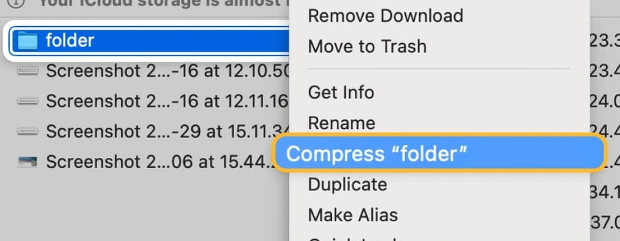
Windows
- В Проводнике щёлкни правой кнопкой мыши по папке проекта.
- Если в меню есть команда Compress to ZIP file («Сжать в ZIP»), выбери её.
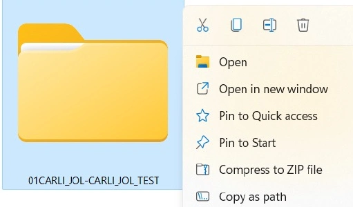
Если команды в меню нет
- Выбери Show more options («Показать дополнительные параметры»), если видишь этот пункт. Если классическое меню уже открыто, начни со следующего шага.
- Наведи указатель на Send to («Отправить»). В подменю выбери Compressed (zipped) folder («Сжатая ZIP-папка»).
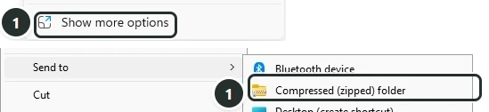
В обоих случаях готовый ZIP появится рядом с папкой проекта.
Команды архивации в Finder. Команды архивации в Проводнике.
Открой ZIP и найди в нём последнюю версию рабочих файлов, папку ПЕРЕДАЧА, если она уже есть, и нужные файлы, которые не попадают на GitHub. Архив с личными данными храни в закрытом месте.
Если Claude ещё отвечает и в проекте используется Git, проверь, есть ли отложенные правки в stash, временном хранилище Git. Попроси Claude показать их. Если нужны отдельные правки, попроси восстановить их в рабочих файлах с сохранением исходной записи в stash. Проверь восстановленные файлы и создай новый ZIP. Первую копию сохрани отдельно, пока не убедишься, что новая открывается и содержит нужные изменения.
Если у проекта уже есть копия на GitHub, обнови её после проверки файлов. GitHub хранит отправленную копию проекта.
- Открой список изменений, который Claude подготовил при передаче. Если после этого файлы менялись или список не сохранился, попроси обновить его. Проверь, какие из этих файлов нужно включить в копию на GitHub.
- Перед коммитом попроси показать список файлов, которые в него попадут. Убери из списка ключи, пароли и личные заметки. Только после этого попроси создать коммит.
- Перед отправкой попроси Claude проверить содержимое изменений и все локальные коммиты, которых ещё нет в выбранной ветке на GitHub. Если в них есть ключи, пароли или личные данные, остановись и устрани проблему до отправки.
- Попроси отправить проверенную ветку с её локальными коммитами на GitHub и сообщить адрес репозитория, имя ветки и полный код последнего отправленного коммита. Сохрани все три значения в заметке о резервных копиях, которую можно открыть отдельно от проекта, например с другого компьютера. При желании продублируй их в
ПЕРЕДАЧА/СТАРТ.md. - На GitHub открой страницу проекта и в списке веток над файлами выбери то имя, которое записано для GitHub. Проверь, что короткий код рядом со списком файлов совпадает с началом сохранённого полного кода. Открой ключевые файлы и убедись, что видишь свои правки.
GitHub хранит файлы из отправленных коммитов. Новые файлы, правки вне коммитов и изменения в stash остаются на компьютере. Для материалов с секретами используй закрытую локальную копию. Как закрыть секретные файлы от Claude Code.
Рабочую папку и связь с GitHub достаточно настроить один раз. Когда появятся важные правки, записка или TXT, положи их в рабочую папку и создай новый ZIP тем же способом. Распакуй новый ZIP в отдельном месте и проверь его содержимое, прежде чем заменять прежнюю копию.
Как распаковать ZIP.
Mac
- В Finder дважды щёлкни по ZIP-файлу.
- Открой папку, которая появилась рядом с архивом. Справка Apple по работе с архивами.
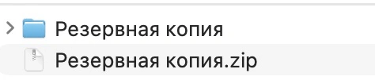
Windows
- В Проводнике щёлкни по ZIP-файлу правой кнопкой мыши.
- Выбери Extract All («Извлечь всё»).
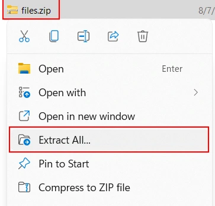

Окно извлечения Windows
- Оставь предложенную папку или укажи другую через Browse («Обзор»).
- Нажми Extract («Извлечь»), затем открой папку, выбранную при распаковке.
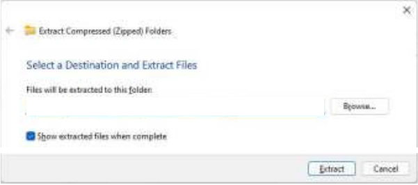
Если распаковываешь копию проекта с компьютера или GitHub, продолжи с распакованной папкой проекта. Следующий шаг нужен для архива, который выдал Claude.
Достань нужный разговор из архива Claude
Если архив Claude ещё не распакован, найди ZIP-файл в «Загрузках» браузера или в папке, которую указали при скачивании, и распакуй его. В распакованной папке найди conversations.json, файл с перепиской. Формат JSON хранит текст сообщений вместе со служебными данными. Скачай ZIP с просмотрщиком переписки и распакуй его тем же способом. Инструкция к просмотрщику.
- Открой файл
читать-переписку.htmlдвойным нажатием. Он откроется в браузере. - В просмотрщике есть поле для выбора файла. Открой через него
conversations.jsonиз папки, получившейся после распаковки архива Claude.
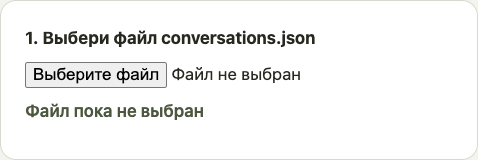
- Введи название в поле «Найди разговор по названию» и выбери разговор в списке под полем. Когда откроется переписка, нажми «Скачать этот разговор в TXT» рядом с её заголовком.
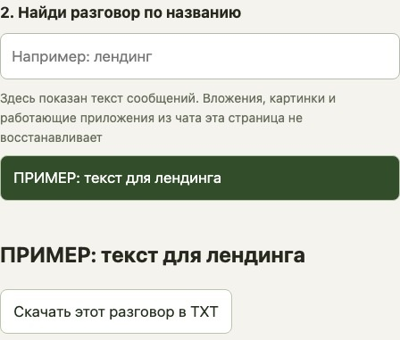
Сохранённый TXT - обычный текстовый файл. Перенеси его из «Загрузок» в папку проекта. Если папки пока нет, сохрани TXT отдельно, например в «Документах». Добавь его в проект, когда восстановишь рабочую папку.
Если просмотрщик недоступен, открой conversations.json в TextEdit на Mac или Блокноте на Windows, найди знакомую фразу и перенеси отдельный читаемый отрывок в TXT. В сыром JSON встречаются служебные поля и обозначения переносов строк. Для выгрузки разговора целиком используй просмотрщик.
Открой проект в Codex
На Mac или Windows один раз установи настольный ChatGPT и войди в аккаунт. В левом верхнем углу открой меню ChatGPT и выбери Codex. Страница установки. Справка о переключении.
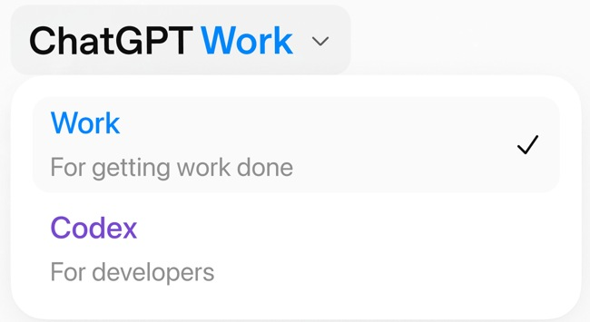
Для продолжения задачи достаточно папки с файлами. Если хочешь перенести ещё и настройки или недавние чаты из Claude Code, у OpenAI есть отдельная инструкция по импорту.
Для работы с локальной папкой найди в боковой панели Projects («Проекты»). Если папка уже там, выбери её. Новую рабочую папку можно открыть сочетанием клавиш.
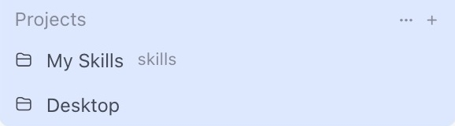
Чтобы открыть новую папку, нажми Command + O на Mac или Ctrl + O на Windows. В системном окне выдели рабочую папку. На Mac нажми Open («Открыть»), на Windows Select Folder («Выбор папки»). Сочетания клавиш настольного приложения.
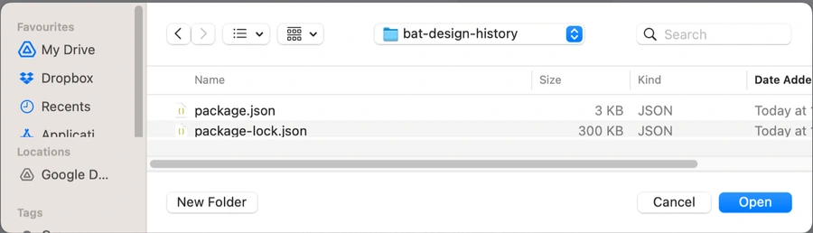
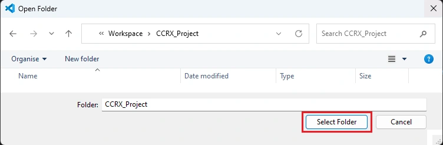
Открой этот проект в боковой панели и нажми New chat («Новый чат») внутри проекта. В некоторых версиях кнопка называется New thread. Проверь название проекта рядом с новым чатом. Если оно другое, вернись в боковую панель, открой нужный проект и начни чат из него. Кадр с открытым проектом. Справка о проектах и чатах.
Если работаешь в VS Code, можно открыть тот же проект в расширении Codex. Как открыть Claude Code и Codex рядом с файлами проекта.
В новом чате отправь текст из ПЕРЕДАЧА/ПРОМПТ-ДЛЯ-CODEX.txt. Если этого файла нет, возьми запасной запрос. Посмотри, какие файлы Codex смог открыть и какое первое действие предлагает. Если заметки нет в этом списке, укажи её путь в папке проекта или положи туда сохранённую копию.
2. Claude запросил документ, но документ ещё не отправлен
Забери то, что ещё открывается
Если работа шла только в браузере и рабочей папки ещё нет, создай её в Finder на Mac или в Проводнике на Windows. Если открыт важный разговор, скопируй его текст в обычный текстовый файл в рабочей папке. Скачай нужные вложения туда же. Сразу сохрани ZIP-копию файлов на компьютере, даже если папки ПЕРЕДАЧА ещё нет.
Если настройки доступны, запроси экспорт так же, как в первом блоке. Скачай архив, как только придёт письмо, пока можешь войти в аккаунт. Затем достань нужный разговор в TXT и сохрани его в рабочей папке.
Если Claude ещё отвечает в браузере или в Claude Code, отправь тот же промпт для передачи. Когда появятся заметки и запрос, обнови копию по той же инструкции.
Продолжи работу из сохранённой папки
Если Claude уже не отвечает на сообщения, используй доступные файлы и копию памяти, если она есть. Где искать их вручную, описано в третьем блоке.
В обоих случаях открой сохранённую папку в Codex и отправь подготовленный запрос. Если Claude не успел его написать, возьми запасной запрос из третьего блока.
3. Аккаунт заблокировали после отправки документа
Поищи экспорт на экране ограничения
Anthropic описывает самостоятельную выгрузку данных для некоторых случаев блокировки. Доступный состав архива зависит от причины ограничения. Порядок выгрузки после блокировки в справке Claude. Если архив удалось получить, распакуй его. Если внутри есть conversations.json, сохрани нужный разговор в TXT рядом с файлами проекта. Если рабочая папка пока недоступна, сохрани TXT отдельно, например в «Документах».
Если не получается войти или скачать архив, обратись в поддержку. В справке есть отдельная инструкция для тех, кто не может войти. Укажи почту аккаунта и опиши, на каком шаге возникла проблема. Для пересмотра блокировки воспользуйся формой апелляции по инструкции Claude.
Если архив не содержит conversations.json или экспорт недоступен, переходи к сохранённым файлам проекта.
Собери проект из того, что осталось
Если рабочая папка сохранилась, начни с неё. Если остался только локальный ZIP, распакуй его отдельно от рабочей папки и используй получившуюся папку дальше.
Если копии на компьютере нет, открой страницу проекта на GitHub. Если в заметке о резервных копиях указана ветка, выбери её в меню над файлами. Проверь, что короткий код рядом со списком файлов совпадает с началом сохранённого полного кода. Если заметка потерялась, нужную ветку помогут найти даты коммитов и содержимое ключевых файлов.
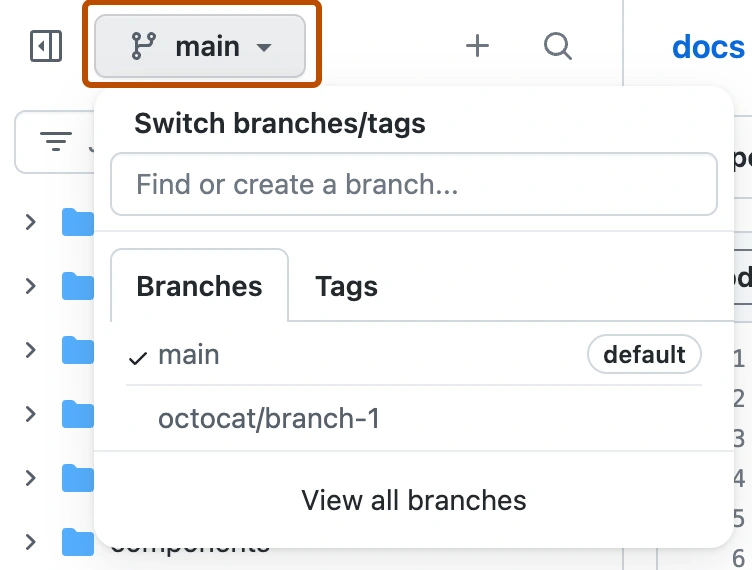
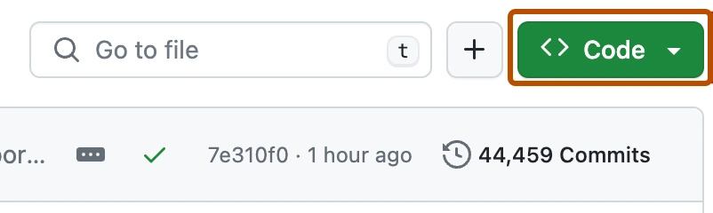
Если сохранился код коммита, можно скачать именно эту версию, даже когда имя ветки забыто. К адресу главной страницы репозитория без косой черты в конце добавь /archive/, затем код коммита и .zip. Открой получившийся адрес. Для надёжности используй полный код из заметки. Пример адреса в справке GitHub.
Если нужна текущая версия выбранной ветки, открой меню Code («Код») и выбери Download ZIP («Скачать ZIP»). Справка GitHub со снимком меню.
Когда скачаешь ZIP с GitHub по ветке или по коду коммита, распакуй его в отдельную папку.
Открой рабочую или распакованную папку проекта. Если рабочей папки никогда не было или ни одной копии не осталось, создай новую папку в Finder на Mac или в Проводнике на Windows. Положи в эту папку сохранённый TXT, черновики и вложения, которые удалось найти. Если осталось только то, что помнишь о задаче, запиши это в отдельном текстовом файле в той же папке. Эту папку дальше открой в Codex.
Если Claude Code использовался на этом компьютере, найди папку его настроек. По умолчанию она называется .claude и лежит в твоей домашней папке.
Mac
- Открой Finder и нажми Command + Shift + G.
- В появившееся поле вставь
~/.claude/и нажми Enter. Справка Apple о переходе к папке.
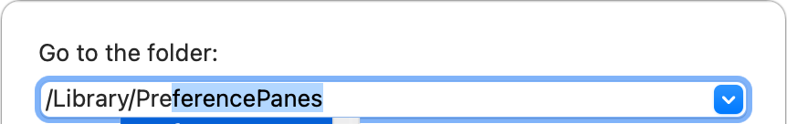
Windows
- Нажми клавишу с эмблемой Windows и R одновременно. Откроется окно «Выполнить».
- В поле «Открыть» вставь
%USERPROFILE%\.claudeи нажми Enter. Справка Microsoft об окне «Выполнить».
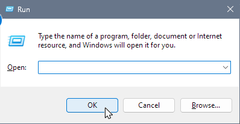
Если при настройке Claude Code указали другую папку в переменной CLAUDE_CONFIG_DIR, вставь её путь вместо стандартного. Где мог быть задан этот путь, смотри в справке Claude Code о файлах настроек. Если папка не открывается, продолжи работу с уцелевшими файлами проекта и пропусти поиск памяти.
Поищи autoMemoryDirectory в личном settings.json внутри найденной папки настроек. В папке проекта проверь также .claude/settings.json и .claude/settings.local.json. Если при запуске использовались другие настройки, проверь и их. Открой указанный путь, найди MEMORY.md и сверь по заметкам, что там есть последние решения по этому проекту.
Если путь не задан, не открывается или в нём нет нужных записей, открой projects/ внутри папки настроек. Ищи папку проекта по его полному пути или по пути к корню Git-репозитория: в названии вместо разделителей могут быть дефисы. Внутри открой memory и сверь заметки с последней задачей.
Скопируй нужные заметки и MEMORY.md внутрь папки проекта. Если заметка ссылается на файл по старому адресу, положи этот файл рядом и укажи его новый путь. Если автоматическая память не сохранилась, используй инструкции проекта и уцелевшие материалы. Справка о расположении памяти.
Если переписку получить не удалось, запиши то, что помнишь о последнем решении и незавершённой правке. Отдельно отметь, чего не хватает.
Открой собранную папку в Codex и начни чат внутри проекта. Если есть запрос из ПЕРЕДАЧА/ПРОМПТ-ДЛЯ-CODEX.txt, отправь его. Если Claude не успел подготовить этот файл, используй запасной запрос ниже.
Дай Codex запрос, если готовой передачи нет
Этот запрос пригодится, если Claude не успел подготовить первое сообщение для Codex. В нём упоминаются AGENTS.md и CLAUDE.md, файлы с инструкциями проекта для Codex и Claude Code. Справа вверху блока нажми «Скопировать промпт» и вставь текст в новый чат открытого проекта.
Пример до. В папке лежат черновик письма и договор. Переписка закрыта, а файл памяти удалось найти на компьютере.
Помоги продолжить работу по материалам в открытой папке проекта.
1. Работай только внутри открытой папки. Если ссылка ведёт наружу или файл недоступен, укажи его путь и скажи, что мне добавить в папку. Если есть ПЕРЕДАЧА/СТАРТ.md, прочитай его и открой перечисленные там заметки, инструкции и исходники. Если готовой передачи нет, найди относящиеся к задаче файлы инструкций AGENTS.md и CLAUDE.md, сохранённые файлы памяти, записи разговоров и актуальный черновик.
2. Перечисли файлы, которые ты действительно прочитал. Назови задачу, последнее подтверждённое решение и ограничения, которые нужно сохранить. У каждого вывода укажи, в каком файле он подтверждается.
3. Скажи, какой файл открыть первым и что именно в нём сделать. Если сведений не хватает или источники противоречат друг другу, перечисли пробелы и задай один вопрос, если без него нельзя двигаться.
Пока ничего не меняй. Не запускай старые скрипты и не подключай внешние сервисы без моей команды.Пример после. Codex называет черновик, заметку с согласованной правкой и раздел договора, откуда взять условия оплаты. Если для правки не хватает сведений, он указывает, что нужно уточнить. После этого дай команду на саму правку.
Частые вопросы
Нужно ли ждать запроса документа, чтобы сохранить проект?
Можно подготовить передачу заранее. Сохрани файлы, память проекта и экспорт переписки, пока доступ открыт.
Что делать, если Claude больше не отвечает, а чат ещё виден?
Скопируй текст разговора и скачай доступные вложения вручную. Для Codex возьми запасной запрос.
Можно ли передать Codex весь архив переписки?
Для текущей задачи достаточно нужного разговора. Извлеки его из архива и сохрани рядом с рабочими файлами.
Почему Codex не видит заметки Claude?
Они могут лежать за пределами открытой папки. Найди каталог памяти и положи копии нужных заметок внутрь проекта.
На GitHub сохранены все мои правки?
Там доступны правки из отправленных коммитов. Незакоммиченные файлы и локальные заметки сохрани в отдельном архиве.
Источники
Когда проект снова открыт, можно распределить работу между помощниками: одному поручить черновик, другому - проверку по правилам проекта. Ниже обучение работе с такой командой.
Что можно делать с нейросетями, если не знаешь кода?
Чтобы почувствовать размах, посмотри Концентрат Ивана Сергеева в записи. ИИ-агенты на твоих глазах собирают продукт, контент, сайты и воронки без кода. Это основа под любую цель: свои услуги, партнёрка, чужой бизнес. Три вечера в записи, промпты и четыре скилла. 990 ₽ один раз. Доступ на 14 дней после оплаты.
Забрать КонцентратУже знаешь, чего хочешь? Тогда в мастер-группу Ивана: система продаж на ИИ без продюсера и технаря, сопровождение и сообщество
Заполнить анкету предзаписиНабор открывается редко, кто записался заранее, получает лучшую цену и бонусы. Платить сейчас не нужно
Реклама. ИП Сергеев И. С., ИНН 352511695540. erid: 2Vtzqwfc8iA